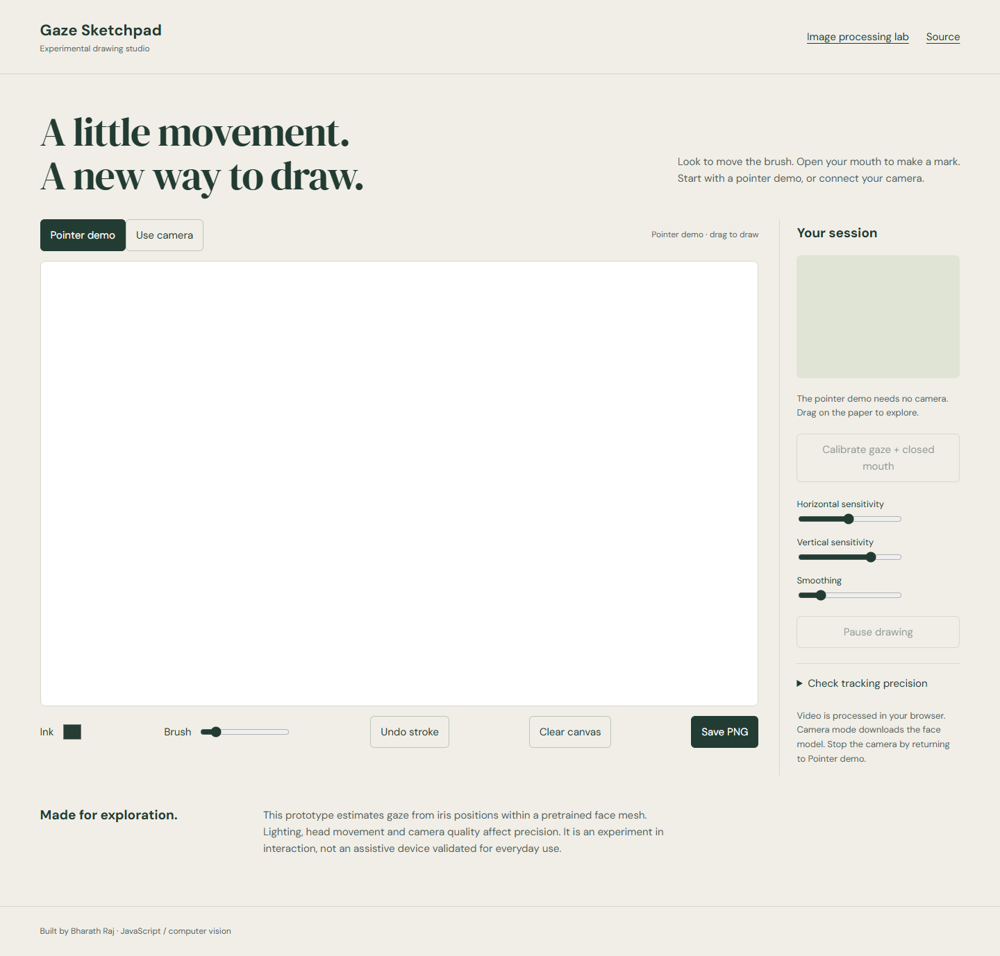
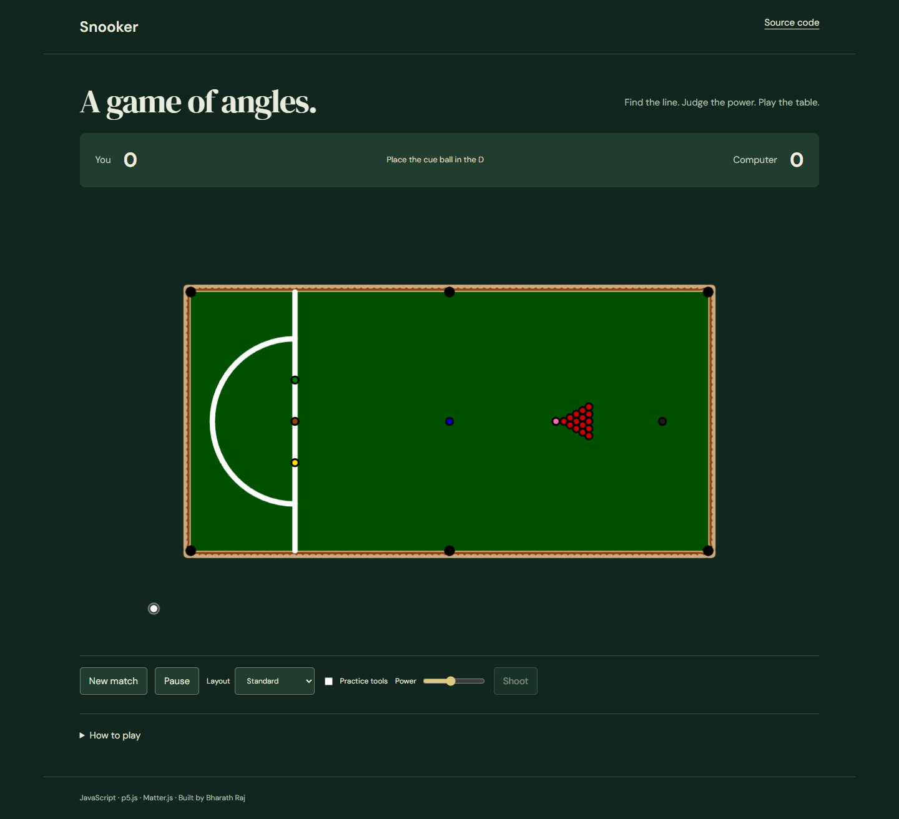
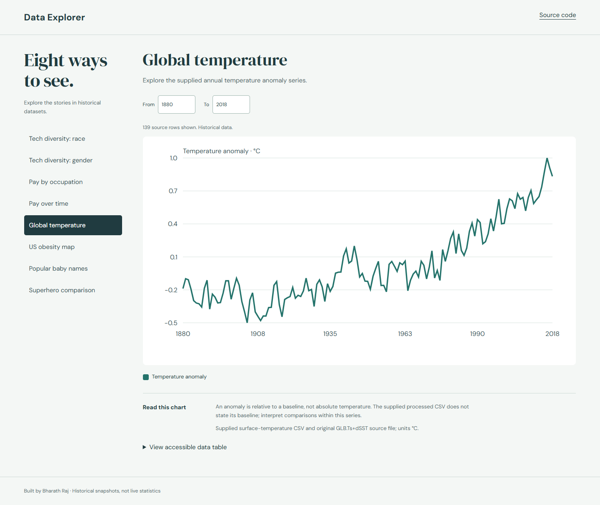
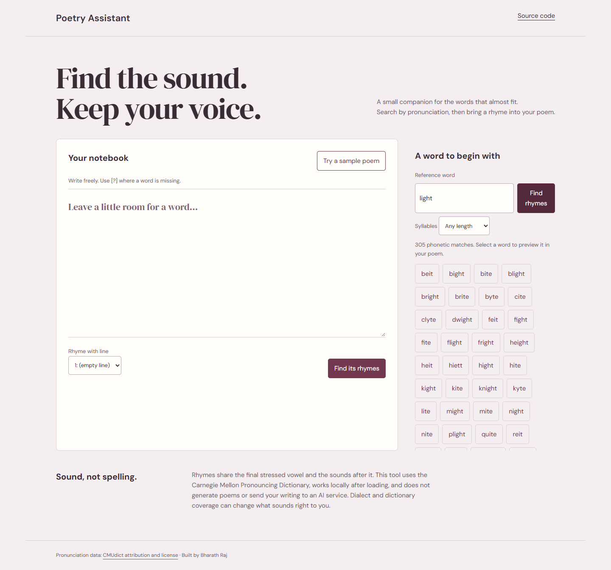
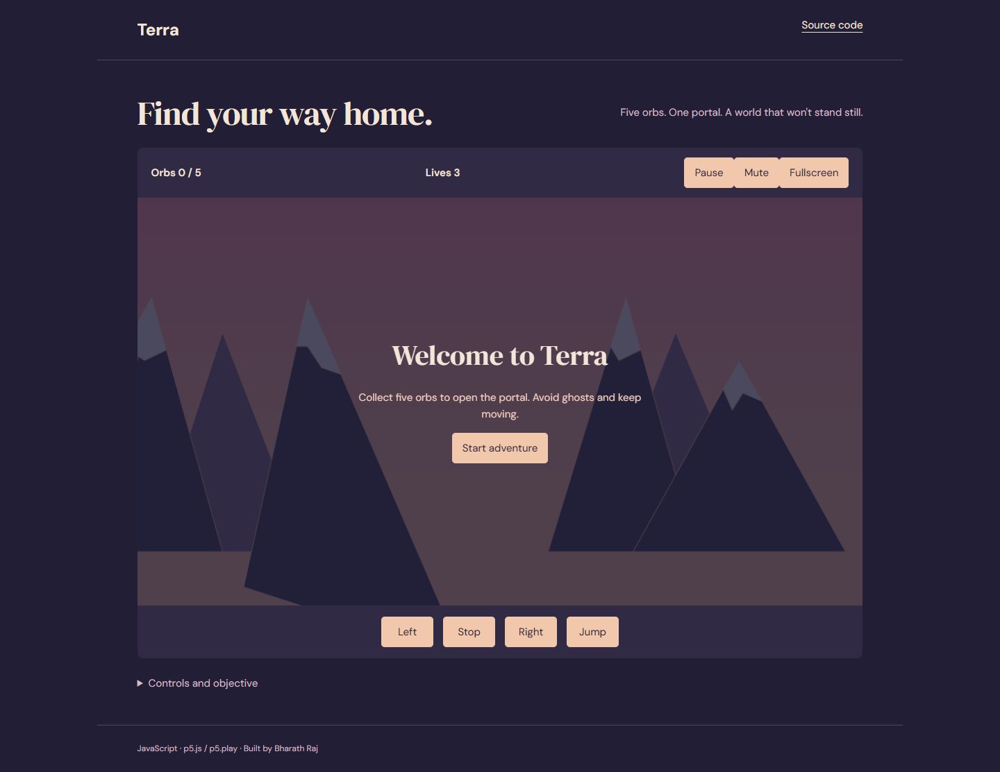

Computer vision / JavaScript
A drawing studio that maps pretrained face landmarks to a canvas, with calibration, smoothing and tracking-loss handling.
Engineering notesSoftware engineering · Internship portfolio
I'm Bharath Raj. I build interactive software across computer vision, games, language and data—and work through the behavior underneath the interface.
Explore my projectsSelected work / 01—07
Open a project, read the decisions,
see what it can do today.

Computer vision / JavaScript
A drawing studio that maps pretrained face landmarks to a canvas, with calibration, smoothing and tracking-loss handling.
Engineering notes
Physics / JavaScript
A browser table game with Matter.js physics, a computer opponent and a dedicated match interface.
Engineering notes
Data / SVG / JavaScript
Eight historical datasets, chart-specific controls and accessible data tables.
Engineering notes
Language / JavaScript
A writing notebook with phonetic rhyme search, syllable filters and replacement previews.
Engineering notes
Games / p5.js / p5.play
A landscape platform game with collectibles, hazards, a portal and touch controls.
Engineering notesBackend / Express / EJS / SQLite
An Express/EJS/SQLite application for discovering events and managing bookings. The refreshed demo is in preparation.
Engineering notesPresentation / HTML / CSS
An internship portfolio organized around real projects, technical decisions and honest limitations.
Engineering notesHow I approach the work
Make behavior explicit. Calibration, unknown results, pause states and failed loads should be visible to the person using the software.
Choose the right representation. Physics worlds, pronunciation groups and chroma vectors solve different problems. The implementation should reflect that.
State the limits. Historical data stays historical. An estimated key stays an estimate. A simplified game explains its rule coverage.
Under the surface
Decisions, tradeoffs and boundaries.
A drawing studio that maps pretrained face landmarks to a canvas, with calibration, smoothing and tracking-loss handling.
Custom mapping around a pretrained model; an explicit pointer mode makes the interface usable without a webcam.
One-point calibration assumes a steady head. The measurement tool reports one session, not a validated accuracy benchmark.
A browser table game with Matter.js physics, a computer opponent and a dedicated match interface.
World coordinates remain stable during resizing; match state and presentation are separated.
Simplified foul penalties and CPU tactics. This is a snooker-inspired game, not a tournament rules engine.
Eight historical datasets, chart-specific controls and accessible data tables.
Shared CSV parsing and chart lifecycles keep views consistent; source notes make dates and interpretation visible.
Historical extracts are not live statistics. An obesity metric labeling discrepancy is disclosed rather than silently relabeled.
A writing notebook with phonetic rhyme search, syllable filters and replacement previews.
A local CMU pronunciation dictionary groups words by their final stressed vowel and following phonemes.
English pronunciation coverage and dialect vary. Suggestions are dictionary matches, not generated verse.
A landscape platform game with collectibles, hazards, a portal and touch controls.
A shared reset rebuilds sprites and world state; the canvas scales while world coordinates stay fixed.
A single level and desktop-first movement. Asset provenance and inherited dependencies are documented.
Backend / Express / EJS / SQLite
An Express/EJS/SQLite application for discovering events and managing bookings. The refreshed demo is in preparation.
Planned work covers transactional capacity checks, organizer authorization, CSRF and recoverable form errors.
The refreshed implementation and demo are not ready for review.
An internship portfolio organized around real projects, technical decisions and honest limitations.
Static HTML, responsive typography and actual interface captures keep the work easy to review.
Personal education and contact details are omitted until verified. Deployment links will be enabled after publishing.
Let's talk about the work
Explore the code and project notes on GitHub.
Visit my GitHub